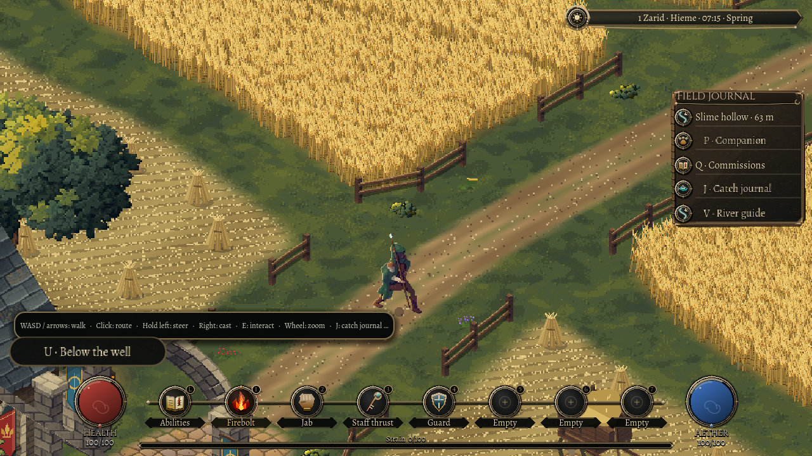
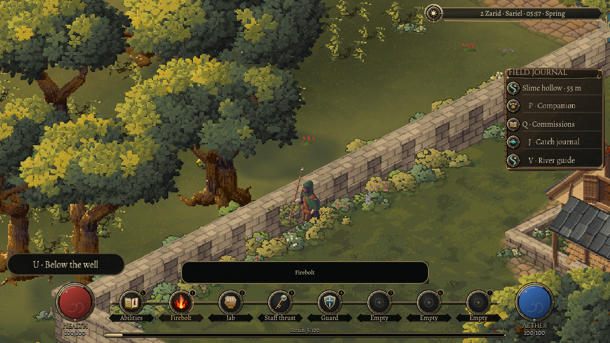

Following your hand
31 October 2026
A quick click chooses a destination. Holding the pointer gives the next step back to your hand.
Walking around Oakwell has two different needs. Sometimes you want to point across the square and let the character find a way there. Sometimes you want to thread a doorway, follow a wall, or change your mind halfway through a step.
This pass keeps quick click-to-walk and adds continuous steering from a sustained left press. After a short hold, the character follows the pointer's current ground position. Move the pointer and the heading changes. Release and the held walk stops.

The walls still get a say
Steering asks the existing movement rules for a step. It does not move the character directly to a cursor position. Walls, doorways, stairs and water still decide where that step can go, and the existing collision slide lets a diagonal approach carry you along an obstacle.
The held walk also avoids asking for a new long route every frame. Choosing a destination remains a route-finding job; guiding the next step is a local movement job. Both end at the same physical rules.

Look where the spell is going
Mouse movement can turn the character towards the pointer. A right-click cast uses that direction immediately, so a quick change of aim does not wait for the next movement update. Keyboard walking remains available, and touch keeps its existing controls.
The fiddly part was deciding when your hand should stop owning the walk. A conversation, a menu or lost application focus cancels a held gesture. That includes the clock's small dawn-and-dusk menu. Closing a panel or finishing a wait while the button is still down does not send the character wandering off. You release and press again.
Opening the clock with the keyboard is a quiet action: its menu takes the key and leaves your aether alone. Waiting begins when you choose a time.
Clicks on people and interface controls keep their existing purpose. The aim is a movement option that fits the town's interactions, rather than another control competing with them.
A small loop worth testing properly
The native checks exercise a short route click, a held walk, a live reversal, release, keyboard movement, an actual ability panel, focus changes, a pointer-directed cast and sliding beside a wall. Separate simulation checks cover gesture timing and cancellation.
This work changes control and intent. It does not claim a new animation set or a measured frame-rate improvement. Its success is more immediate: the character should take the step you are asking for, and stop when you let go.